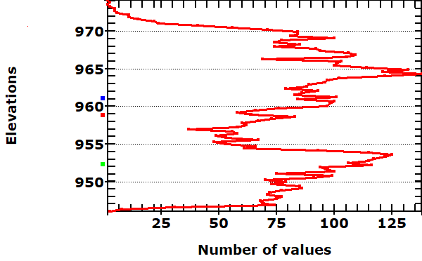

 |
NPts: 7434 Max: 974.00 99 pc: 971.14 95 pc: 969.60 90 pc: 968.35 Mean: 959.05 Median: 959.85 50 pc: 959.85 5 pc: 947.93 Min: 945.92 StdDev: 7.07 Aster z: 961.09 55.56% 0.54 ALOS z: 958.78 46.66% 0.46 SRTM z: 952.27 22.90% 0.23 |
Last revised 2/25/2020